一份核心能力
核心 SKILL.md 只维护一份，平台差异交给 Plugin、Manifest 与 Adapter。
一个很小的输入改造
我把麦克风键映射成语音输入快捷键。它没有让模型变强，只是让我更快地把需求说给 Codex 和 Claude Code。
真正完成语音转文字的仍然是输入法或语音软件。遥控器只把“找输入框、开麦克风、说完再关闭”压缩成一个不需要看屏幕的动作。这是输入体验的小改造，不是 Harness 的一部分。
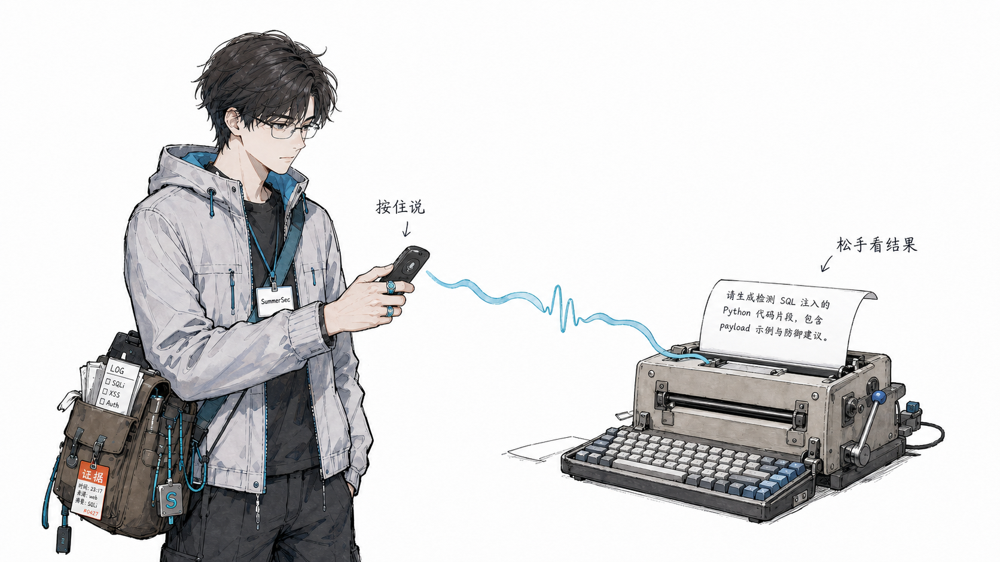
从零散经验到能力系统
真正困难的是：多个平台怎么使用，数量多了怎么组织，修改如何同步与版本管理，效果变差怎么回滚，以及怎样根据真实结果继续改进。
Harness 管理 Skills 的完整生命周期：组织、分发、运行、验证和进化。
模型人人都能用，真正能带走的是经过验证、可以跨平台复用的方法。
核心 SKILL.md 只维护一份，平台差异交给 Plugin、Manifest 与 Adapter。
Claude、Codex、Cursor 共享同一套方法，一次更新同步多个入口。
按写作、开发、安全、媒体组织 Plugin，按需安装、启用和更新。
Git 保存修改原因和结果，Release 管发布，Diff 管审查，旧版本提供回滚点。
真实结果触发小范围候选 Diff，门禁决定接受、拒绝或回滚，避免自由漂移。
我经常使用的不是一个万能 Skill，而是一组按场景分工的能力入口。每一个只解决一类问题，组合起来才是稳定的工作系统。
The portable advantage
换 Agent、换设备、换项目后，已经验证过的方法不再归零。没有版本记录的 Skill，只是一份会不断变形的提示词。
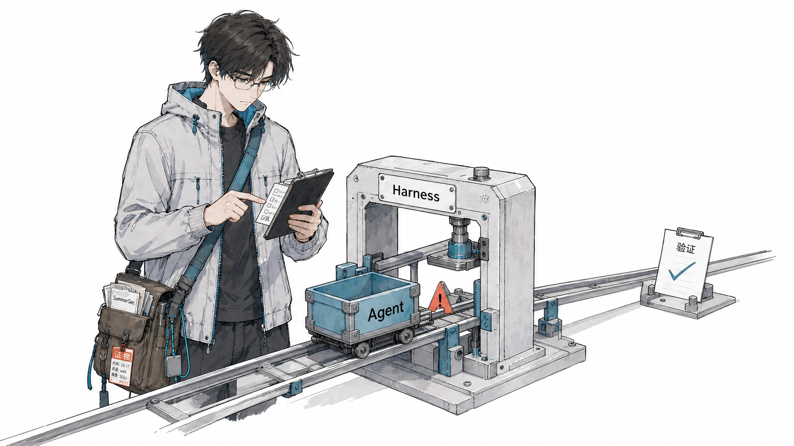
Skill 编写质量
高质量 Skill 不是把要求写得更长，而是把执行路径、外部状态、判断边界和工具选择收窄到可以验证。
把任务拆成有依赖关系的步骤，明确每一步输入、动作和输出，防止跳步和乱序。
关键步骤前读取状态，执行后回读结果，用外部文件对抗遗忘和“看起来做完”。
穷举什么属于范围、什么不属于范围，并提供输入、分析、结论的完整判定示例。
提前回答何时用、为何用、如何用，减少 Agent 在通用工具之间反复试探。
完成这些结构以后，还要检查核心词汇本身。人类觉得相近的词，在模型语义空间里可能激活完全不同的范围。宽边界词会让模型觉得“多想一点也合理”，最终越过定义文件。
左侧不是永远更好的词，而是在当前任务中语义边界更窄、输出更容易验证的选择。
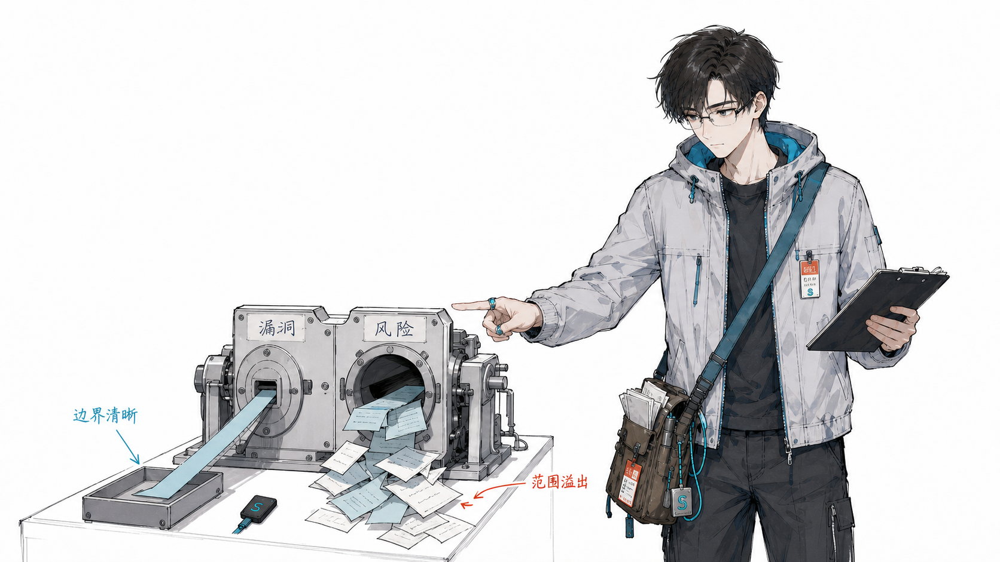
在同一批 56 个测试接口中，Skill 的结构、约束和示例完全相同，只把“漏洞”机械替换为“风险”，准确率就从 89.3% 降到 62.1%。错误并非随机，其中 68% 属于语义范围溢出。这不是普通的措辞润色，而是行为边界发生了变化。
让修改有证据、有版本、有退路
LLM 只生成候选修改。诊断、验证、回滚、黑名单和停止条件交给可复查的工程规则。
只有输出能够客观判定对错的任务才适合自动进化，例如漏洞判断、垃圾邮件分类、结构化字段抽取。开放式写作没有唯一标准答案，不能机械判断一次修改是否真的更好。
总分提高不等于没有回归。真实对比里，“修复旧错误”和“新增错误”会同时发生，所以必须逐 case 检查，并用 Guardrail 拦住被新修改破坏的旧能力。
INPUT执行任务用一批带标准答案的真实 case 暴露稳定失败，而不是凭感觉修改 Skill。
EVIDENCE结果 × 轨迹结果说明错没错，轨迹说明工具调用、步骤和结论是怎么偏离的。
DIAGNOSE确定性诊断规则识别缺步、重复重试和工具错误；宁可少判，也不让 LLM 飘着判。
PATCH候选 DiffLLM 只把已经收敛的根因写成不超过 80 行的小修改。
MEMORY接受或回滚通过验证才写入新版本；失败进入跨版本黑名单，停滞或退化时停止。
TARGET改了有用本次目标 case 至少有一个从错变对。
GUARDRAIL没搞坏旧功能之前答对的 case 一个都不能回归。
HOLDOUT泛化没有退步隔离测试集的 F1 不能下降超过 1 个百分点。
VERIFYSkill 本身仍健康结构、触发词和文本质量不能因为补规则而变乱。
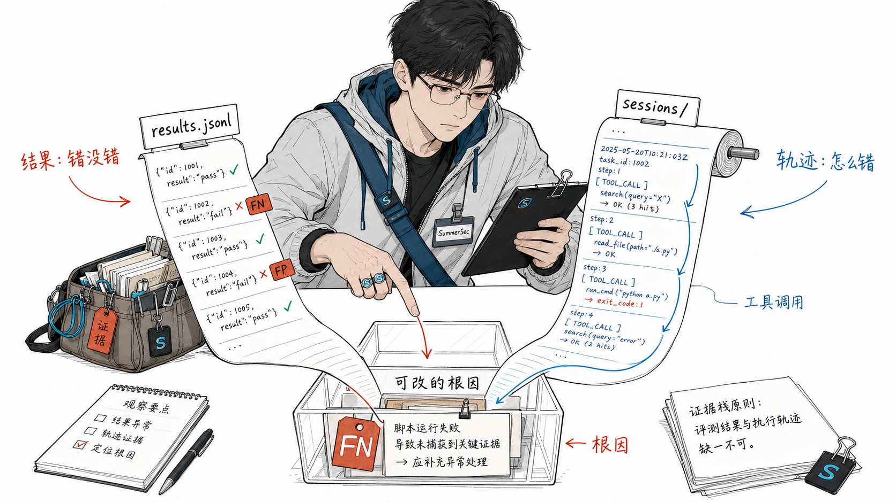
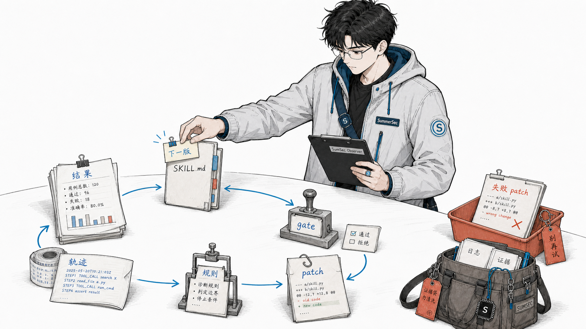
从工程系统回到个人与团队
工具变化很快，做事逻辑也要跟着变。先问 AI 能做什么、需要什么上下文、怎样观察和验证，再决定人的分工。功能、代码和想法都会被复制；别人最难复制的是你持续获得反馈、推翻旧判断并继续向前的能力。
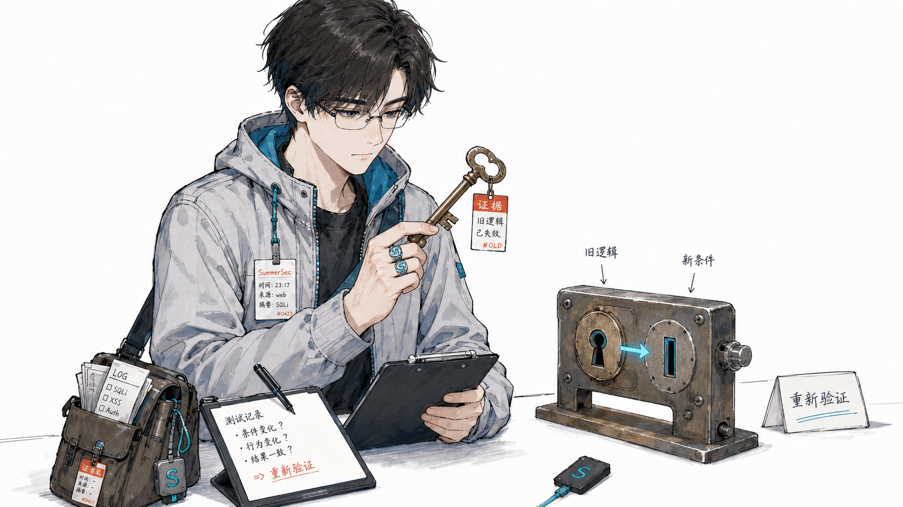
不要只在旧流程旁边加一个聊天框。先重新判断 AI 能做什么、需要什么上下文、怎样执行和验证，再重做工具入口、协作方式与人的分工。真正需要升级的，首先是做事逻辑。
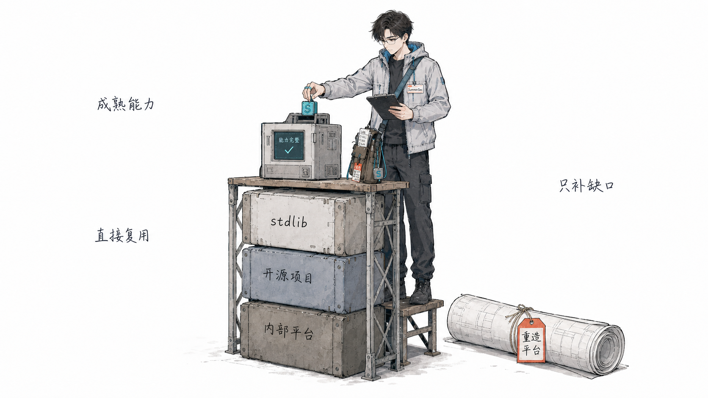
AI 写代码越快，造轮子也越容易。一个需求交给 Agent，它很容易从头搭一套东西，把简单功能写成一部史诗。最后留下的是一大堆要维护的代码，而很多需求其实早已有成熟方案：现有项目、内部平台、标准库、操作系统能力，或者 GitHub 上已经被反复维护的开源项目。
Ponytail 的思路很值得复用：写代码前先问，需求真的存在吗？项目里是否已有实现？标准库、平台原生能力或已有依赖能不能解决？这些路都走不通，再写最小实现。
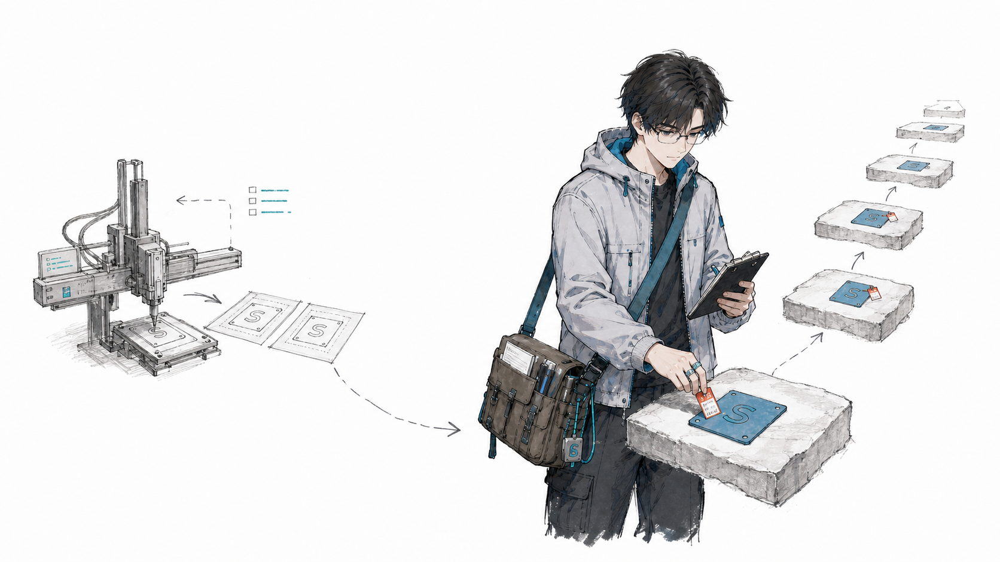
功能、代码和观点都会被复制。真正难以复制的，是持续获得反馈、验证判断、推翻旧结论并进入下一轮的速度。让别人复制到的永远只是你的上一版。
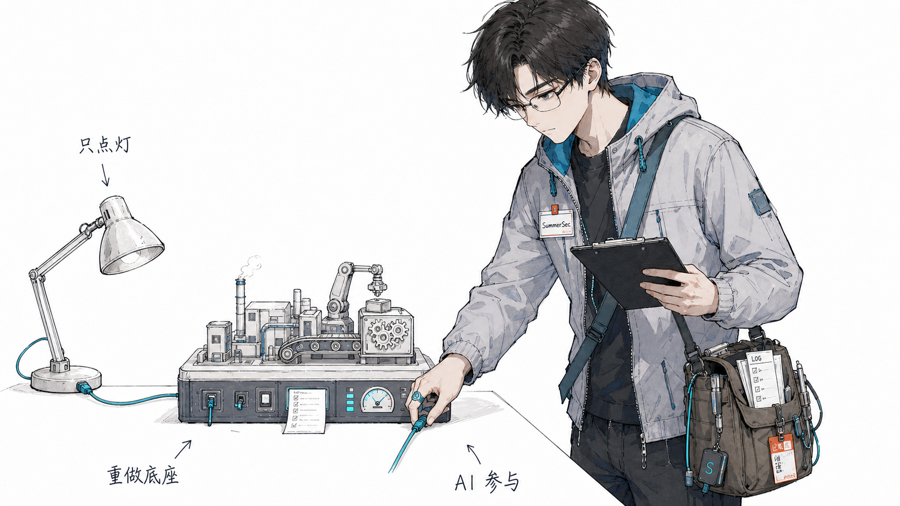
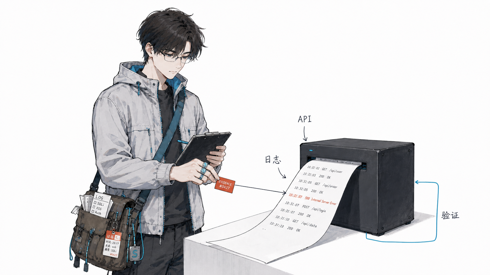
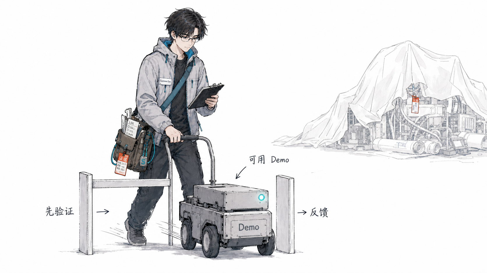
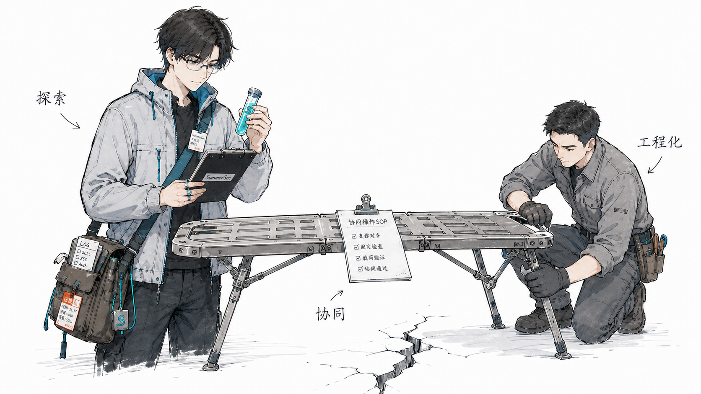
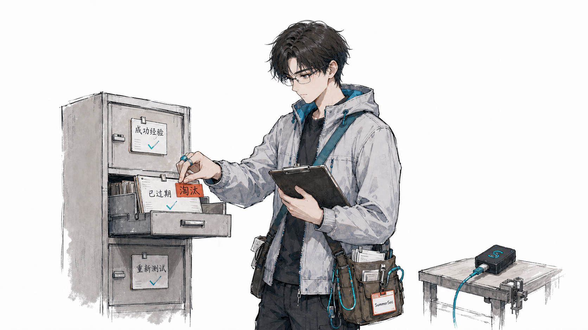